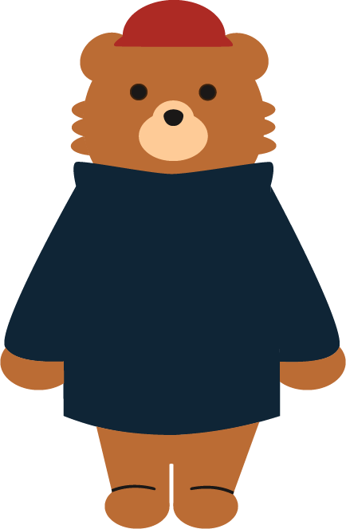
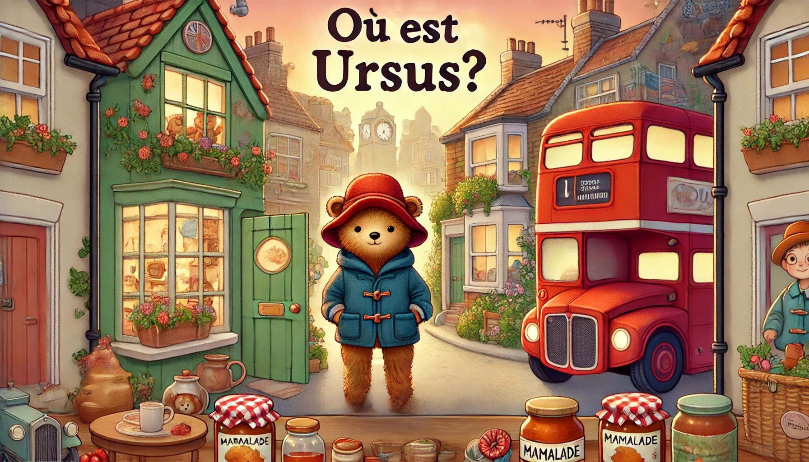

Créé en 1958 par Michael Bond, Paddington est un ours péruvien qui arrive à Londres avec rien d'autre qu'un vieux chapeau, une valise usée et un goût prononcé pour la marmelade.
Adopté par la famille Brown, Paddington vit de nombreuses aventures dans la capitale britannique, captivant les lecteurs du monde entier par sa gentillesse, sa politesse et son sens de l'aventure.

Temps : 10s
Score : 0/7

